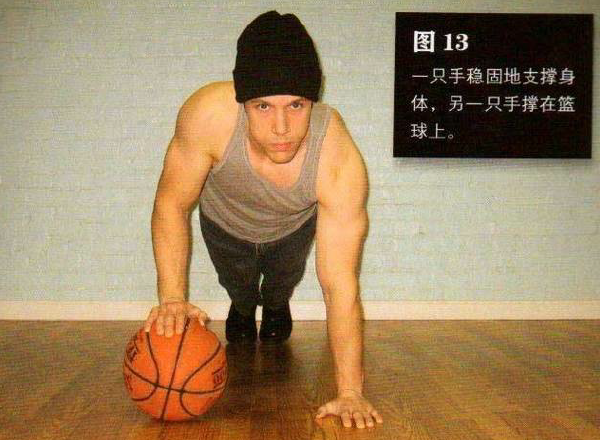
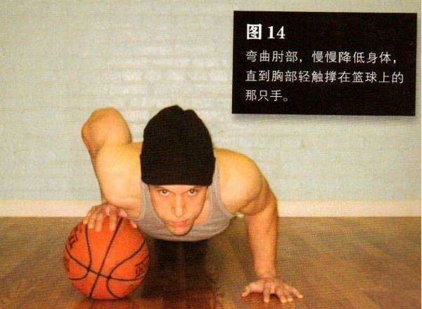

双脚并拢，双腿、髋部、上身成一条直线。双臂伸直，双手撑地，并处于上胸部的正下方。一只手稳固地支撑身体，另一只手撑在篮球上。找到平衡之后，尽力将身体的重量均匀地分摊在两只手上。这样做虽然不容易，但一定要坚持。
弯曲肘部，慢慢降低身体，直到胸部轻触撑在篮球上的那只手。暂停一下，然后将自己推回到起始姿势。
能正确地完成窄距俯卧撑的人都可以信心十足地尝试这个动作。如果刚开始你觉得有些困难，那是因为你的协调性不好，而不是力量不足。你可以用固定的物体，而不用会滚来滚去的篮球。砖块是个不错的选择，等你可以在一块砖上重复此动作 20 次之后，你就可以尝试将两块砖探起来做这个动作。在你可以在三块垒起的砖上重复此动作 20 次之后，你就可以尝试用篮球练习了。
初级标准：1 组，5 次
中级标准：2 组，各 10 次
高级标准：3 组，各 20 次